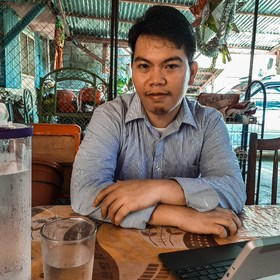

Overview About Me
|  |
Name: Richard Louie Orilla Country: Philippines Email Address: richardorilla@pm.me Github Profile: ShinAska Linkedin Profile: Richard O. Mastodon Profile: @richardorilla PixelFed Profile: @richard_orilla Resume: Click here |
Short Message
I would like to welcome you all to my website. In here I have made an effort to consolidate all of my stuff that I am willing to share online. This includes stuff that I have been exploring or even the conference talks that I am a guest speaker with.
I have also included stuff in here such as free games! Not only that, but also example codes and proof of concept projects such as prototype of games. They can all be found in the Goodies section.
Quick Description of who am I
Dedicated problem solver and a researcher at heart. Kind of a person who likes to do challenging things for the sake of achievement.
Likes to explore whats new in tech, including dwelling on new programming languages. Favorite programming language is C and has already created real-time applications that is used for heavy-duty purposes using this language.
An avid fan of Linux yet explores other operating systems, including, BSD Family (Free, Open and Net), Haiku OS and even ICAROS (Amiga).
1 quart musician, 2 quarts artist and 3 quarts geek. Basically a nerd in a complete package.